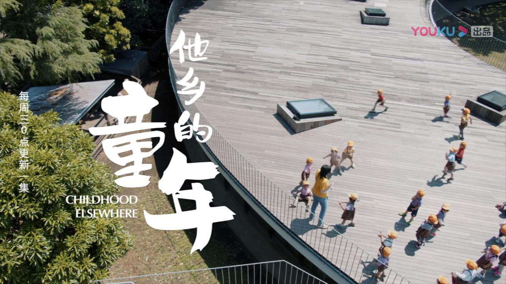

childhood-else-where
日本作为一个整体呈现在世界面前，从小就别引导去感受个人对他人的影响。
元气满满的小朋友，这应该是需要铺垫一下的第一印象，在莲花幼儿园，孩子们聚集在表面松软的土操场上，活力四射，又跑又跳又爬高，一旁的老师通过各种互动和鼓励是孩子们动起来。不大的操场上，运动路线各异的小朋友，可以认为是孩子们的布朗运动。
上课的场景简直是一场日漫灵魂的 Cosplay，或者说终于理解了日本漫画和电影中，各种夸张表现的由来。老师快速的切换各种动作，举起左手、举起右手，期间伴随着大声的问答，孩子们也大声的做出回应。
主持人问园长，孩子们这样一天累吗？园长说，与其说是累，不如说是完全燃烧，竭尽全力激发自己的可能性，然后感叹一句“啊，我好累啊”，从中得到一种喜悦感。
在这里并教具体的知识，课堂上，老师通过投入情感的领读，让孩子们去感受日后他们才会慢慢理解的人生主题。
各家幼儿园的教学理念，引导着日本的未来。当然还有著名的藤幼儿园，通过开放的环形设计，进行设计的体验，把一些理念内化到孩子的行为中。
优酷视频上线了 6 集纪录片《他乡的童年》，每一集造访一个国家，探访当地的幼儿教育。更多精彩内容，值得关注。